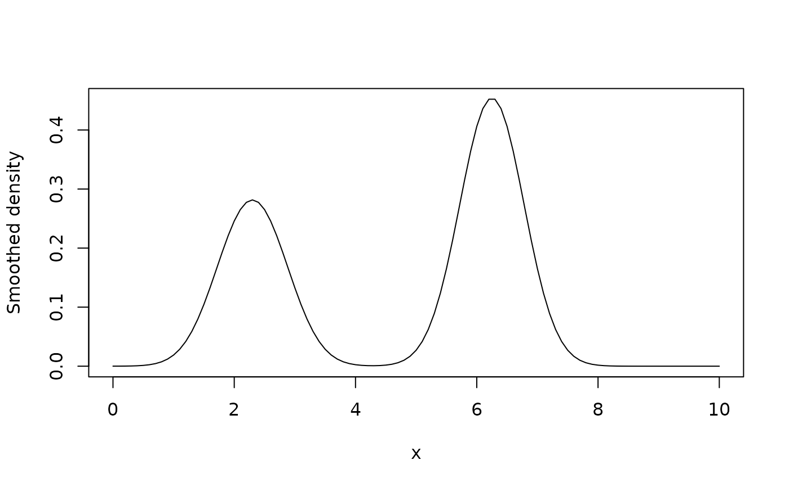

1D Gaussian kernel smoothing by direct convolution, with reflected boundaries
Source:R/kernel-smoothing.R
ker.smooth.conv.RdSmooths values y sampled at equally-spaced points x with a Gaussian
kernel of standard deviation bandwidth, via stats::convolve(),
extending the series by reflection (c(y, rev(y))) at both ends as in the
original implementation. See ker.smooth.fft() for the periodic-boundary
counterpart and why the two are not interchangeable.
References
D'Angelo et al. (2024); see spHawkes-package.
Examples
# Smooth a weighted histogram; the result has one value per break
breaks <- seq(0, 10, by = 0.1)
h <- hist.weighted(c(2, 2.5, 6, 6.2, 6.4), rep(1, 5), breaks = breaks)
smooth <- ker.smooth.conv(h$mids, h$density, bandwidth = 0.5)
plot(breaks, smooth, type = "l", xlab = "x", ylab = "Smoothed density")
